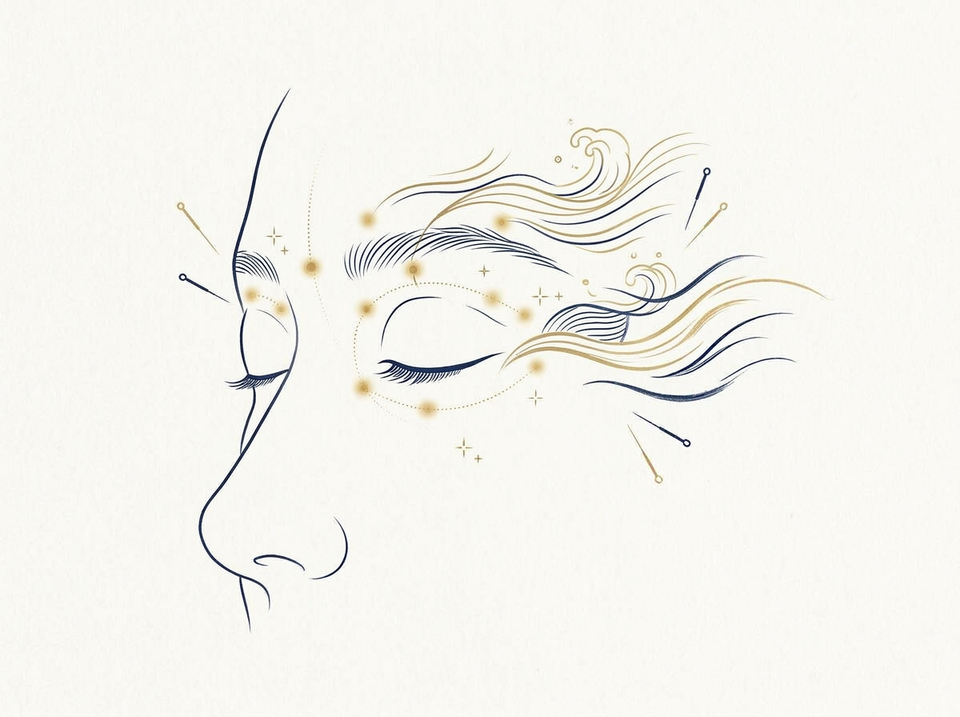

膠様滴状角膜ジストロフィーの鍼灸
角膜にアミロイドが沈着し強いまぶしさや異物感が生じる指定難病です。眼科治療最優先で安定期の疲労や首肩こりを支えます。

このようなお悩みはありませんか？
- ✓強いまぶしさ（羞明）や涙が止まりにくい症状がある
- ✓目の異物感や痛み、視力低下に悩んでいる
- ✓保護用ソフトコンタクトレンズや点眼・手術で管理している
- ✓強いまぶしさによる眉間や首肩の緊張を和らげたい
原因・メカニズム
TACSTD2遺伝子の変異（常染色体劣性遺伝）によって発症する指定難病で、日本人に比較的多く見られます。角膜の実質層にアミロイドという物質が沈着し、乳白色〜黄色の隆起や濁りが進行することで、強い羞明、異物感、流涙、眼痛、視力低下を引き起こします。治療は角膜表面の隆起切除や角膜移植、保護用ソフトコンタクトレンズ、人工涙液・抗炎症点眼、遮光眼鏡が中心です。
当院の施術アプローチ
1. 角膜の痛みや炎症が強い活動期および術後管理期は鍼灸禁忌とし、眼科専門医での点眼・保護用レンズ・手術などの標準治療を最優先とします
2. 症状が安定し主治医の許可を得た段階で、強いまぶしさにより目を細める癖から生じる首・肩・顔面周囲の過緊張を優しく緩めます
3. 眼部への直接的な圧迫を避け、自律神経を整えて療養生活のストレスを和らげる補完ケアを行います
よくある質問（FAQ）
Q. 角膜の濁りや隆起は鍼灸で改善しますか？
いいえ、アミロイドの沈着による角膜の病変を鍼灸で改善することはできません。眼科専門医による点眼、保護用レンズ、手術などの標準治療が最優先です。
Q. 目の痛みやまぶしさが強い時期でも受けられますか？
眼痛や炎症が強い急性期・活動期は眼科受診を優先してください。状態が落ち着き主治医の許可が出た安定期に、首肩こりや全身疲労のケアとしてご相談いただけます。
#膠様滴状角膜ジストロフィー#指定難病#角膜アミロイド#羞明#異物感#角膜移植